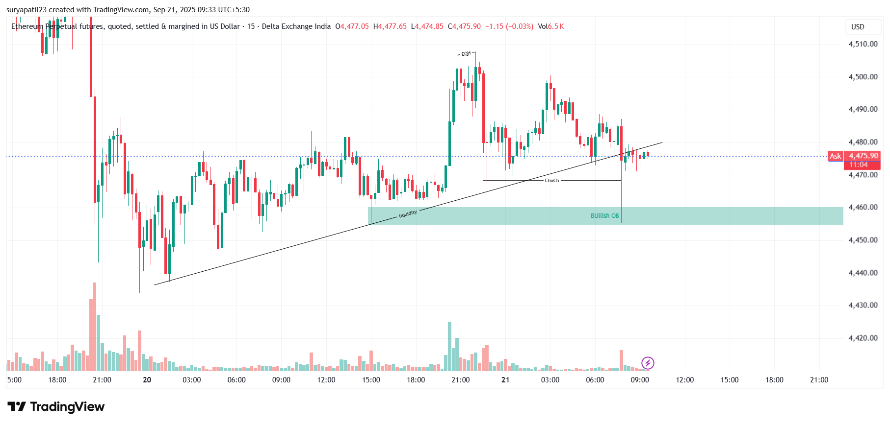
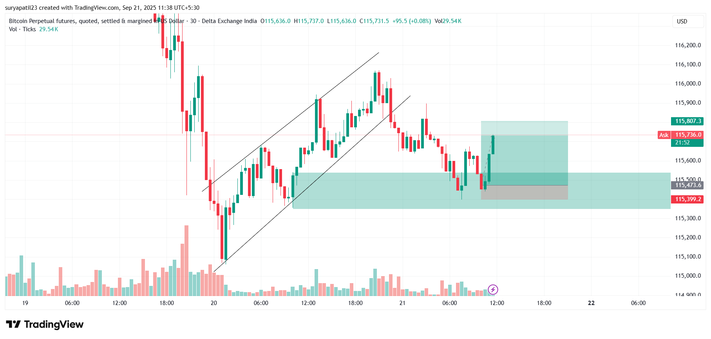

Institutional Trading • Market Structure • Liquidity Zones • Fair Value Gaps
The Smart Money Concept (SMC) is a methodology used to follow the footprints of big institutions (banks, hedge funds, FIIs). Unlike retail strategies, SMC reveals where institutions enter and exit the market by analyzing market structure, liquidity zones, and order blocks.
✅ Helps trade with institutions, not against them
✅ Provides low-risk, high-reward entries
✅ Improves accuracy in spotting reversals & continuation
✅ Works across Forex, Stocks, Crypto, and Indices
Price breaks structure upward → pulls back into an order block → liquidity sweep happens → entry taken with stop-loss below the order block → target set at next liquidity zone or fair value gap. This ensures you follow institutional moves instead of random retail entries.
 Join our SMC mentorship and start trading with the power of institutional strategies.
Get Now